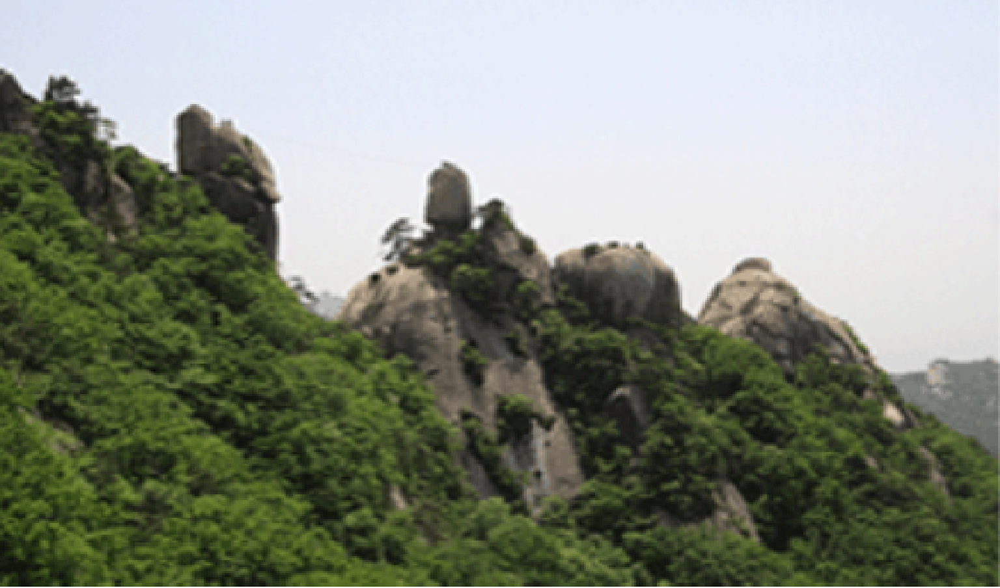

도봉산
- 산개나리가 자생하는 도봉산!
- 산개나리는 우리나라 중북부 지방에서 주로 자생하였으나,
현재는 찾아보기 어려울 정도로 극소수만 남아있다. 멸종위기에 있는
산개나리를 보호하기 위하여 천연기념물로 지정하였으며, 현재 북한산 국립공원의
깃대종으로 지정되어있으나 북한산에서는 찾아볼 수 없고,
도봉산 지역에 일부 자생하고 있다. 줄기 속, 잎자루에 난 털, 직립인 줄기 등으로
개나리와 구별된다. ※ 깃대종 : 환경보전 정도를 나타내거나 한 지역의 생태계를 대표하는 상징 동·식물종(種)
도봉산
- 빛나는 화강암과
어우러진 한 폭의
산수화
- 뾰족뾰족하게 솟은 산봉우리의 아름다움이 빼어난 산이다.
“푸른 하늘을 깎아세운 만 길 봉우리”라 읊었던 옛 시인의
표현만큼이나 선인봉, 자운봉, 만장봉, 신선대, 오봉에 이르기까지
모두 거대한 화강암 으로 되어있어 맑고 푸른 하늘을 더욱 돋보이게 한다.
이러한 봉우리들 사이로 수 십개의 맑고 깨끗한 계곡이 형성되어 산과 물의
아름다운 조화를 빚어내고 있다. 세종 때의 문장가이며, 한성부 판윤
(지금의 서울 특별시장) 을 두 번씩이나 지냈던 서거정은 만장봉 아래에서
도봉산의 아름다운 경치를 보며 읊었다 한다.
도봉산
- 도봉산의 수려한
경관은 어떻게
만들어졌을까?
- 도봉산은 지질학적으로는 고생대부터 화강암의 지반이
융기 및 침식되어 형성되었으며, 지금으로부터 약 2억만년전
한반도의 지각변동사상 가장 격렬했던 중생대 쥬라기 중엽의
대보조산운동(大寶造山運動)에 의해 형성된 대보화강암의
돔(dome)형태의 암벽과 암릉으로 이루어져 있다.
